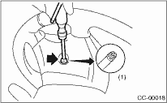
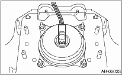

CAUTION:
Refer to “CAUTION” of “General Description” before handling the airbag module. 
1. Position the front wheels straight ahead. (After moving a vehicle 5 m (16 ft) or more with front wheels positioned straight ahead, make sure that the vehicle moves straight ahead).
2. Turn the ignition switch to OFF.
3. Disconnect the ground cable from battery and wait for at least 20 seconds before starting work.
4. Using TORX®BIT T30, remove the two TORX®BIT bolts on the side of steering wheel.

|
(1) |
TORX®BIT T30 |
5. Disconnect the airbag connector on the back of airbag module, and then remove the airbag module.

6. Refer to “CAUTION” for handling of a removed airbag module.